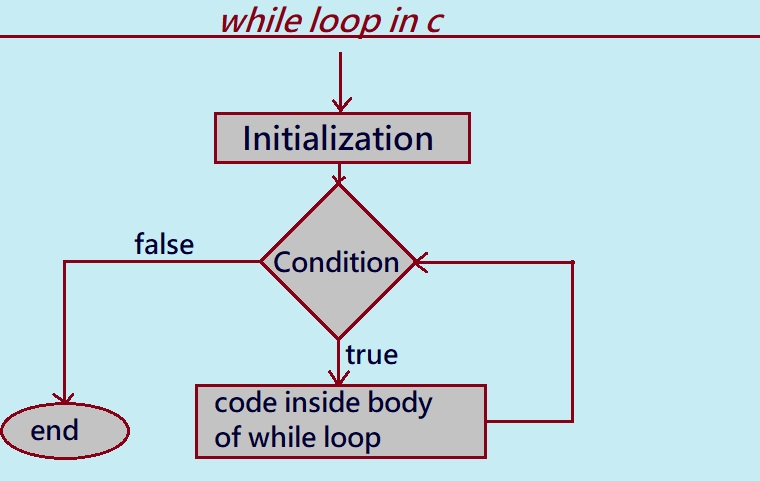

In this tutorial section, we will learn what a while loop is.
What is a while loop in C?
while loop: A while loop in C Programming is a pre-tested loop. In general, a while loop repeatedly executes a part of the code statements multiple times, depending upon a given condition.
The while loop is also known as a pre-tested or entry-controlled loop, meaning the condition is tested before the body of the loop.
A while loop in C language is an iterative/repeating statement and is used when a specific statement needs to be executed again and again.
A while loop is called an entry controlled loop because first, the boolean expression is tested and depending on the tested result, the loop is executed.
Following are some real use cases of a while loop:
e.g.
1.Music Player loop: While the user does NOT press 'stop' and the playlist is NOT stopped, get the next song and play the song.
2.User input loop: Ask a yes-no question to the user and get an answer.
3.While the answer is not 'yes' and the answer is not 'no', repeat the question.
4.Username and password validation: Validate username and password until both are correct.
5. PIN validation.
Mastering the `while` Loop in C Programming
Advantage using while loop in C programming
Following are some of advantage using while loop in C programming.
1. The while loop is very easy and simple to understand.
2.The statements inside a while loop will continue to execute as long as the condition is True.
Disadvantage using while loop in C programming
Following are some of Disadvantage using while loop in C programming.
1.Placing a semicolon after a while loop's condition (e.g., while(condition);) can create a problem. Although it might compile correctly, this will make the loop an infinite loop.
2.A while loop can lead to unexpected results in a C program when its exit condition is not well-defined.

The given diagram is the flowchart showing how a 'while' loop works in C programming.
1. Initialization: After step-by-step execution of the instructions, the program control enters the initialization part. In this step, the programmer declares or initializes the variable to some value.
Initialization of the variable happens outside the loop and it is not part of the 'while' loop, but it is essential to initialize it before the loop starts because it is required when the programmer uses a variable in the condition or test expression.
2. Condition: The condition is an expression that may evaluate to either true or false. This is one of the primary and most essential steps, as it decides whether the block of code in the 'while' loop will execute or not. The code inside the body of the 'while' loop will be executed if and only if the tested condition is true; otherwise, control jumps outside the loop and stops the execution.
3. Body: It is a block of code or the actual set of statements that will be executed repeatedly until the specified condition is true. This block of code or statements is known as the body of the loop. It can include variables, functions, expressions, etc.
The block of code or statements in our flowchart is "Code inside body of loop."
4. Updation:
Updation is not part of the syntax, but we have to define it explicitly in the body of the loop. It is an expression that changes the value of the loop variable in each step of execution or iteration.

Let us study real-world syntax of while loop and then we will look detail into all parts of the while loop.
/* statements outside loop.
initilization */
while(condition)
{
/* code inside body of loop
statements to be executed */
/* update expression */
}
/* statement outside loop */
Explanation:
1. Control enters the 'while' loop.
2. The control jumps to the Condition inside the 'while' loop.
3. The condition is tested. Here, the condition tested will either be true or false.
i. If the condition tested is true, then the flow goes into the Body of the loop.
ii. If the condition tested is false, then the flow goes outside the loop.
4. If the condition tested is true, the statements inside the body of the loop get executed.
5. Updation takes place.
6. Control jumps back to step 2.
7. If the condition tested is false, the 'while' loop ends and the control jumps outside the loop.
write a C program to illustrate use of while loop
/* C program given below displays "Inside the While loop Body" 10 times */
#include <stdio.h>
int main()
{
/* Declaration and initialization expression */
int n = 1;
/* test the expression */
while(n<=10)
{
printf("\n Inside the While loop Body");
/*update expression */
n+=1; // n++
}
return(0);
}
output:
Inside the While loop Body
Inside the While loop Body
Inside the While loop Body
Inside the While loop Body
Inside the While loop Body
Inside the While loop Body
Inside the While loop Body
Inside the While loop Body
Inside the While loop Body
Inside the While loop Body
Explanation:
1. The program starts from the 'main()' function.
2. 'n' is declared and initialized to '1'.
3. The condition 'while(n<=10)' is tested. Since '1 <= 10' yields 'true'.
3.1 "Inside the While loop Body" gets printed for the 1st time.
3.2 Updation takes place: 'n+=1' executes, so 'n' becomes '2' (i.e., 'n=2').
4. The condition 'while(n<=10)' is tested. Since '2 <= 10' yields 'true'.
4.1 "Inside the While loop Body" gets printed for the 2nd time.
4.2 Updation takes place: 'n+=1' executes, so 'n' becomes '3' (i.e., 'n=3').
5. The condition 'while(n<=10)' is tested. Since '3 <= 10' yields 'true'.
5.1 "Inside the While loop Body" gets printed for the 3rd time.
5.2 Updation takes place: 'n+=1' executes, so 'n' becomes '4' (i.e., 'n=4').
... (This process continues until 'n' becomes '10'
6. The condition 'while(n<=10)' is tested. Since '10 <= 10' yields 'true'.
6.1 "Inside the While loop Body" gets printed for the 10th time.
7.2 Updation takes place: 'n+=1' executes, so 'n' becomes '11' (i.e., 'n=11').
8. The condition 'while(n<=10)' is tested. Since '11 <= 10' yields 'false'.
9. Control flow goes outside the loop and 'return 0;' stops program execution.
Previous Topic:-->> do while loop in C || Next topic:-->>Nested while loop in C.
Other Topics:
Other Topics
SQL Interview Questions Java Control Flow and Loops Interview Questions Top SQL Interview Questions Python Loops Interview Questions Banking Case Study in SQL